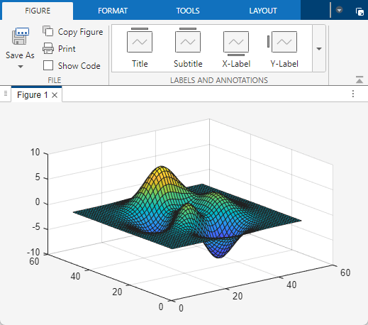
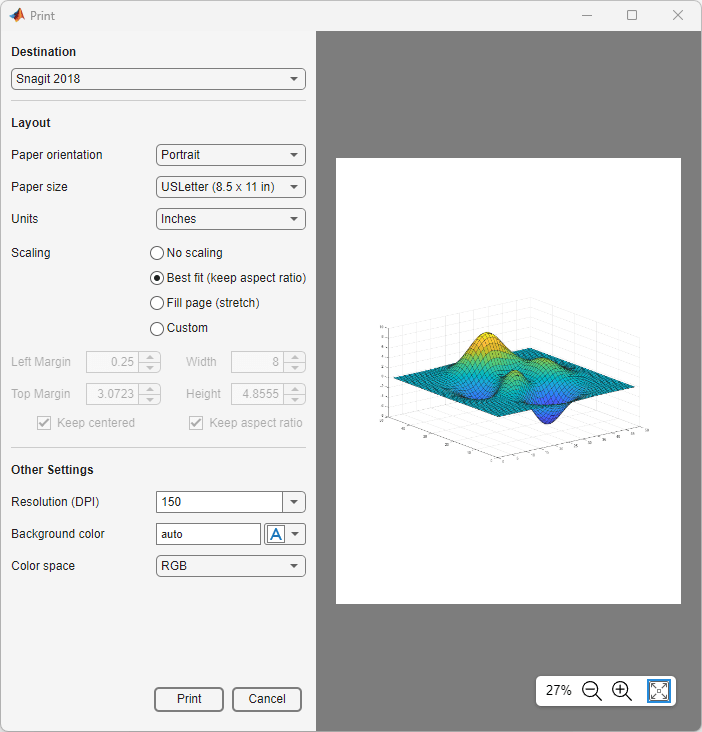
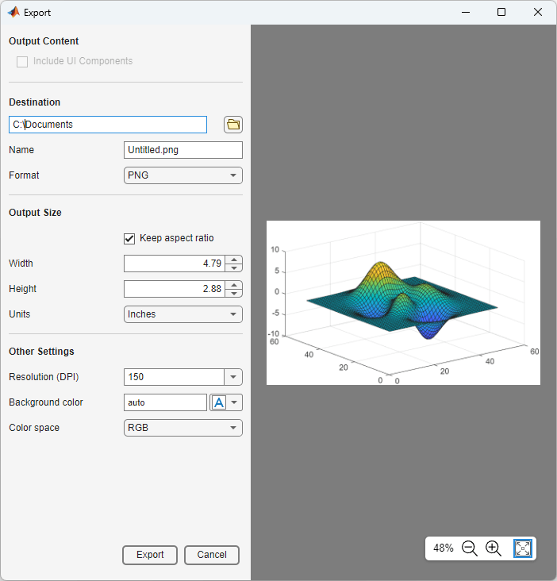

Print or Export Figure from Figure Toolstrip
You can print or export figures from the figure toolstrip with options to adjust settings like width, height, resolution, and background color. To access the figure toolstrip, create a figure. For example, create a surface plot.
surf(peaks)

Print Figure
You can use the figure toolstrip to print plots and other data visualizations in a
figure. However, UI components are not supported. To print the user interface of an
app, use the exportapp function to create an image. Then print the image.
To print the contents of a figure using the figure toolstrip, on the Figure tab, click Print.

This table describes the options you can set.
| Section | Options |
|---|---|
Destination |
|
Layout |
|
Other Settings |
|
Export Figure
To export a figure as a file, on the Figure tab, click the top half of the Save As button. In the Save As dialog box, select a folder and file type, and enter a file name. PDF files are saved as full-page PDFs. Image files, such as JPEG and PNG files, are saved with a resolution of 150 dots-per-inch (DPI).
You can also export a 150-DPI PNG file or a tightly cropped PDF fragment (not a full page) by clicking the bottom half of the Save As button and then selecting Export to PNG or Export to PDF, respectively.
To export a figure and specify options, such as resolution, width, and height, click the bottom half of the Save As button, and the select the Export to menu item.

This table describes the options you can set.
| Section | Options |
|---|---|
Output Content |
|
Destination |
|
Output Size |
|
Other Settings |
|
See Also
uiprintdlg | uiexportdlg | exportgraphics | copygraphics